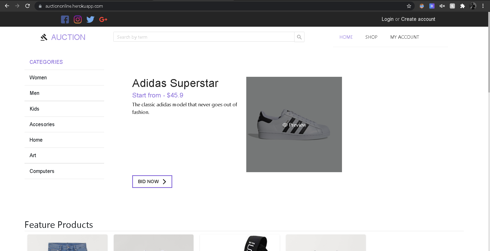

Online auction web app
I created this web app while I was having my internship in Atlantbh. I was working on my own as a full stack web developer where I used React.js (Typescript) for Front end development and Express.js for Back End development. The database managment was done via Sequelize Migrations (MySQL). The database resets every 24h at 23:30 CET time so the web app always has data to work with (of course, this cannot be done for a real app that is used by a company).
To reset the database, I used a heroku job that executes a bash script that resets the database. The Back end server is deployed on heroku where the server itself servers the Front end as a static server for the '/' route.
Because heroku uses a virtual machine to host the app and the machine goes to 'sleep' after no request have been sent to the server for 30 min and the machine gets up again after some request is sent to it, I added monitoring for the app so the heroku virtual machine never goes down and the web page opens always fast. This was done via uptimerobot.
You can find the code on the following link and the web link for the deployed app is here.